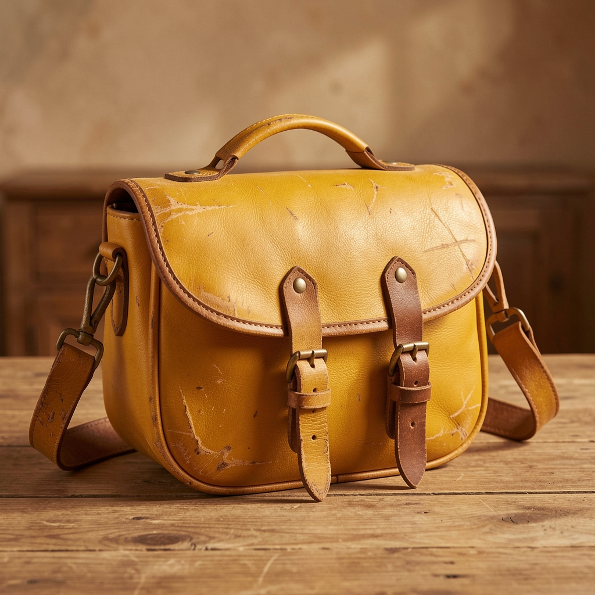

El bolso que heredé de mi madre y que no vendo por todo el dinero del mundo
Estaba en el fondo del armario de casa, envuelto en un pañuelo. Saddle, cuero curtido, herrajes que ya no se hacen así. Lo llevé a tasar y me dijeron que no lo vendiera nunca.

El bolso
Una saddle vintage: esa silueta de silla de montar que nunca pasa de moda porque nunca estuvo de moda, estuvo siempre. Cuero curtido, costura a mano, herrajes de latón que pesan.
El tasador la levantó, olfateó el cuero — se oler el cuero bueno, es literal — y me dijo: «Esto no se vende, esto se hereda de nuevo». Le hice caso. La limpié con crema neutra y le cambié nada más.
Mi historia
Era de mi madre. Lo llevaba los domingos cuando yo era pequeña y le pedía que me dejara guardarme el billete del tranvía. Cuando la dejé a ella — a su versión de los domingos, a la edad que no perdona — tuve que vaciar su armario. Este bolso estaba en el fondo, envuelto en un pañuelo, como quien guarda una carta.
Hoy lo llevo los domingos. Le tengo prohibido a mi media hermana venderlo cuando me toque a mí irse primero. Las cosas buenas no se venden: se pasan.
Un bolso heredado no lleva tus cosas. Lleva las de todos los que lo llevaron antes.